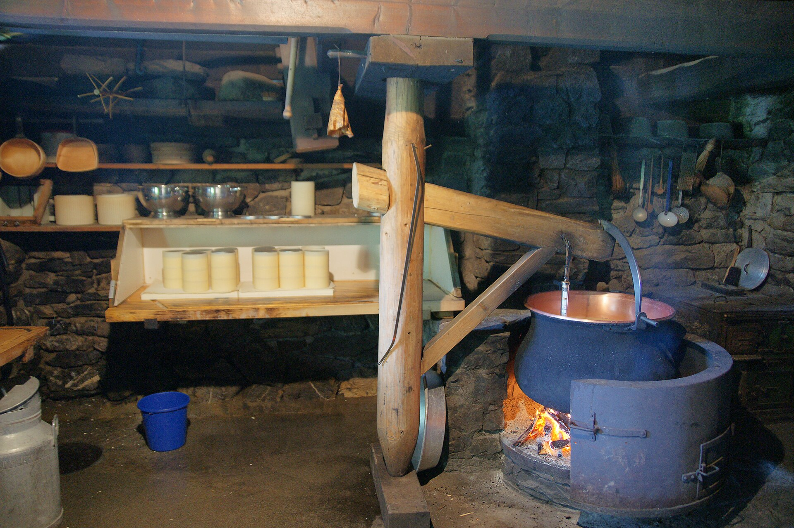

Trattoria Venezia
📍 Tegernsee · Italienisch

Trattoria nahe der Promenade - italienische Klassiker in zentraler Lage.
Auf einen Blick
| Ort | Tegernsee |
| Stil | Italienisch |
| Kueche | Italienische Klassiker |
| Lage | Nah der Promenade im Ort |
| Parken | Parkplaetze zentral |
Kueche & Charakter
Trattoria Venezia in Tegernsee steht fuer Italienisch mit Fokus auf Italienische Klassiker. Trattoria nahe der Promenade - italienische Klassiker in zentraler Lage.
Die Lage ist ein entscheidender Faktor: Nah der Promenade im Ort. Fuer die Anreise empfiehlt sich folgende Option - Parken: Parkplaetze zentral.
Lage
In der Naehe
Wenn Sie in Tegernsee sind, lohnt sich ein Blick auf unsere Huetten & Almen oder unsere Wanderrouten in der Umgebung.
Quellen & Hinweise
- Eigene Recherche (Tegernsee, 2024-2026)
- Regionale Gastronomie-Uebersichten (Tegernsee, Schliersee, Bayrischzell)
Oeffnungszeiten und Angebot bitte direkt beim Restaurant erfragen. Alle Angaben ohne Gewaehr.